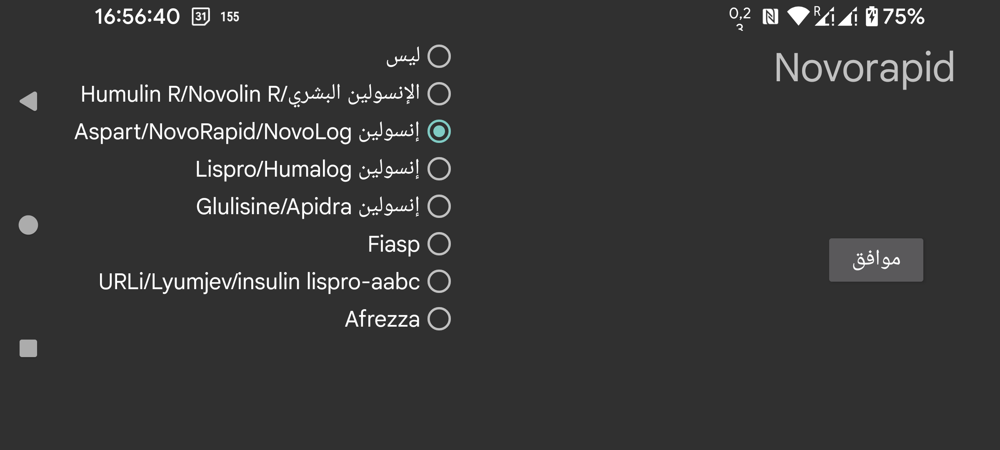

IOB هو مقياس لكمية الأنسولين المتبقية من الجرعات السابقة. قبل Juggluco 9.2.0 كان يُستخدم منحنى تركيز الأنسولين في الدم الخاص بـ Insulin Aspart لتقدير IOB. الآن يمكنك تحديد نوع الأنسولين، وسيستخدم Juggluco منحنى تركيز في الدم خاصاً بذلك النوع. اختر «Not» إذا كانت التسمية لا تشير إلى أنسولين سريع المفعول، وإلا فحدّد نوع الأنسولين. الخيارات هي:
يُشرح تحديد صيغ IOB في صفحة الويب التالية: https://www.juggluco.nl/Juggluco/IOB/overview.html
إذا كنت تعرف نوع أنسولين سريع المفعول غير مذكور هنا، فيمكنك إرسال رسالة بريد إلكتروني إليّ.